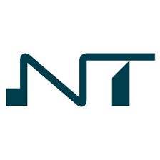
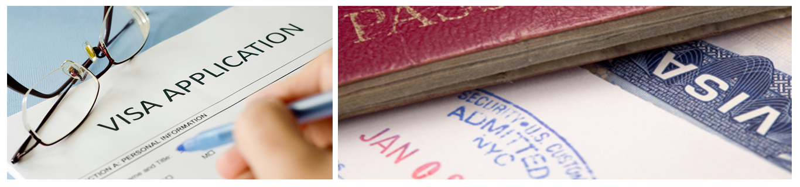

|  |
WELCOME TO NOVOTECH TRAVEL AND TOUR AGENCYWe aid in a comfort and successful tour around the world!! |
| HOME PAGE | ABOUT US | PASSPORT APPLICATION | VISA APPLICATION | CONTACT US |
|  |
* All Ghanaian Citizens must be in possession of a valid passport or legal travel documents such as the police report and the medical review.
* All Ghanaian Citizens may have entry permits(REQUIRED FOR PERMANENT STAY), issued by a Ghana diplomatic mission or consulate abroad or any other visa issuing authority mandated by the Ghana Government to act on its behalf . (ECOWAS nationals and those of other countries with which the Government of Ghana has specific bilateral agreements, are exempted).
* All Ghanaian Citizens (travellers above nine(9) months) are required to have been vaccinated against Yellow Fever at least Ten(10) days from the proposed date of travel and where already vaccinated, provide evidence(certificate) indicating the duration of a vaccination status of not more than Ten(10) years.
* Visas may be granted to personnel of international organisations and visitors to Ghana for tourism, study, business or transit.
* The visa may be granted for single or multiple entry.
* Visas are valid for a period of three months and must be utilised within three months of the date of issue. Visas valid for up to one year and more may be granted for specific purposes.
* People travelling on Business are required to furnish evidence of the fact, such as a letter from their firm, while those travelling at the invitation of a country's nationals or residence or any institutions should furnish a letter of invitation from their hosts.
* Ghanaian Citizens may be required to provide a return or a through ticket to a country which they have the right of admission or may be required to show evidence of sufficient funds for the duration of their stay in the country. Prospective employees may undertake employment within the authorised immigrant quota. Emergency visas may be issued at entry points to travelers who arrive into a country where there is no Ghanaian diplomatic or consular representation, but such applications must be authorised by the Director of the Immigration Service through their sponsors before they leave Ghana.
* Applications for further extension extensions to visitors' permit must be made to the Director of the Countries Immigration Service for consideration. Tourists may be allowed a period of stay of three months if the Countries Immigration Service is satisfied that such tourists have sufficient means of financial support.
* Professionals (doctors, lawyers, nurses, etc), are required to provide particulars of their qualifications in order that the eligibility of their registration may be determined.
* Visa Application Forms to be completed and signed
* Colour Passport size photos (2) to be pasted or stapled in designated place on application form
*Business, Residential addresses and contact telephone numbers to be provided
* Occupation of the traveller
* Financial means to be indicated
* Proposed date of travel
* Names and Addresses of references and/ Accommodation of the country you are traveling to (if it is a hotel, details are to be provided)
* Letter of consent from parent/legal guardian for children under 18 years
| VISA TYPE | STANDARD FEE | SINGLE TRANSIT VISA | GH₵ 2550 | MULTIPLE TRANSIT VISA | GH₵ 3150 | SINGLE ENTRY VISA (3 MONTHS | GH₵ 3250 | MULTIPLE ENTRY VISA(6 MONTHS) | GH₵ 3350 | MULTIPLE ENTRY VISA(1 YEAR) | GH₵ 3850 | MULTIPLE ENTRY VISA(2 YEARS) | GH₵ 4350 |
|---|
* PAYMENTS ARE MADE DIRECTLY AT OUR AGENCY
* ONLINE PAYMENTS BY MOBILE MONEY TRANSACTIONS
* CARD PAYMENT AT COUNTER (for London Office Counter applications)
NOTE: Cheques are NOT accepted. Postal Order and Banker's Drafts are no longer accepted at the London Office.